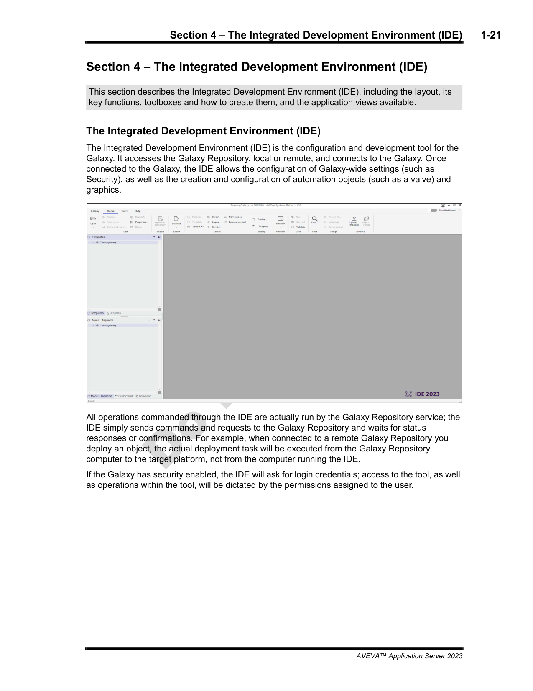
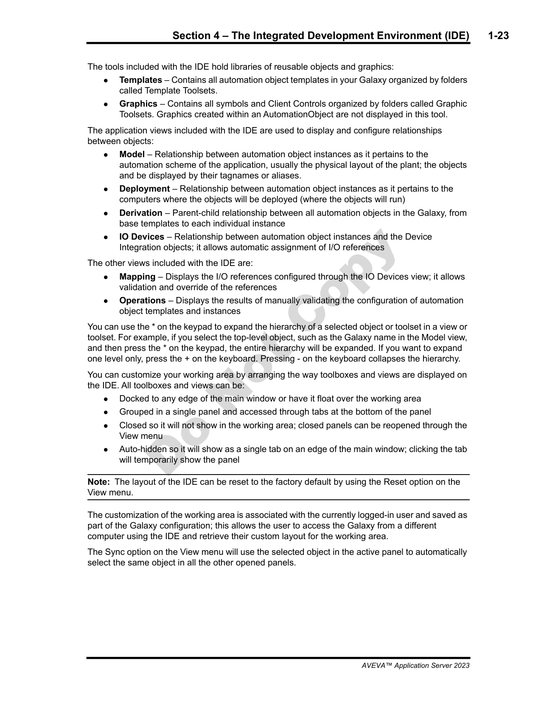
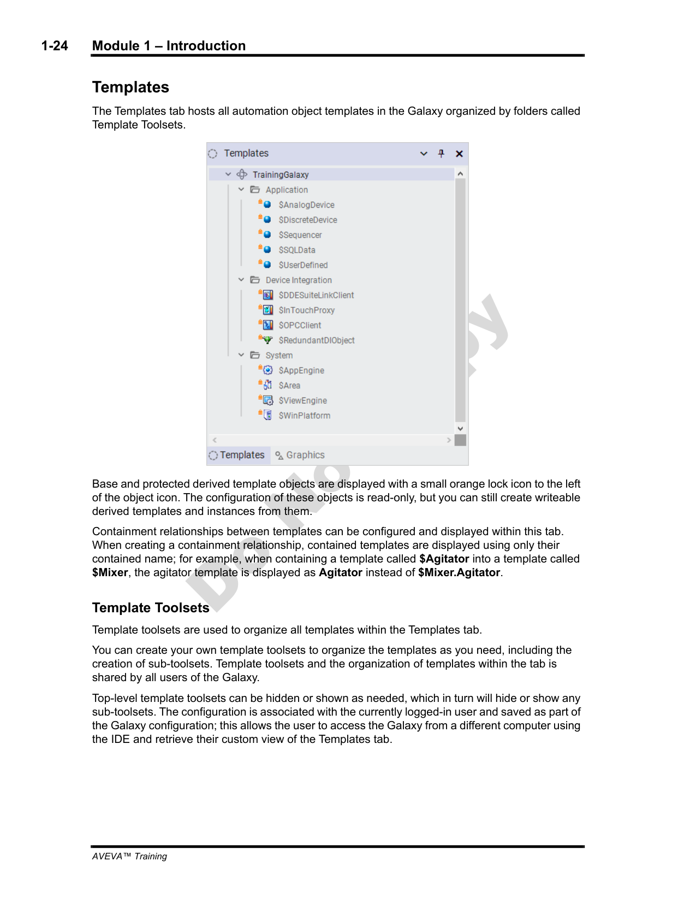
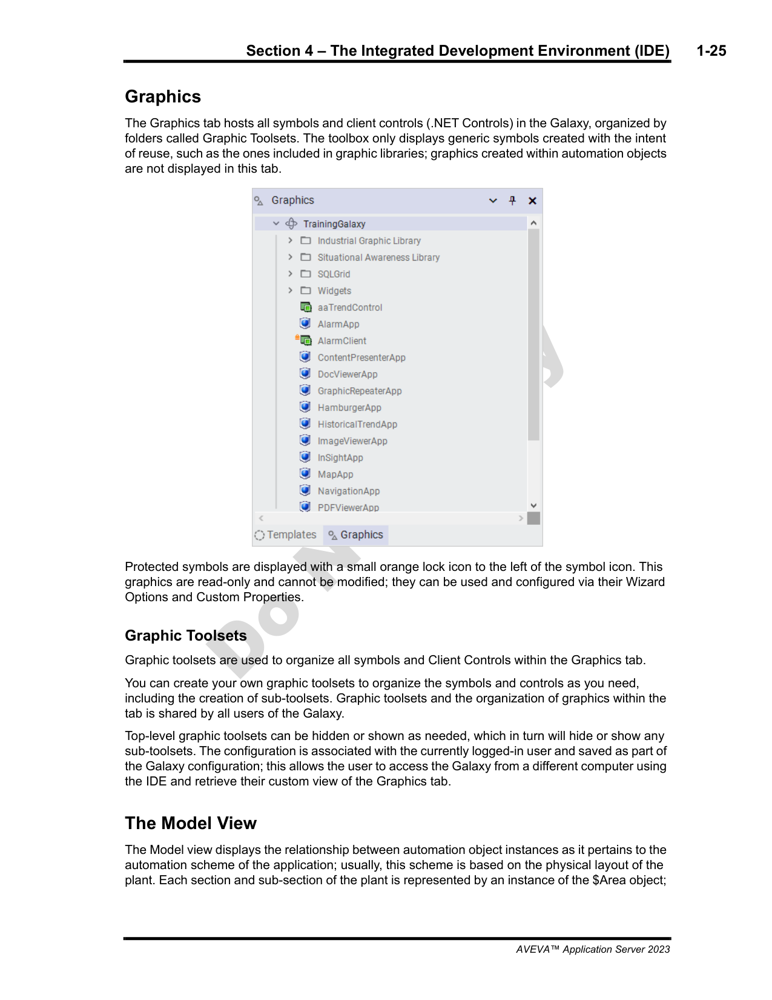
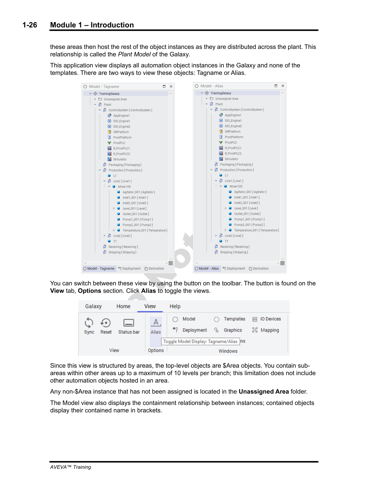
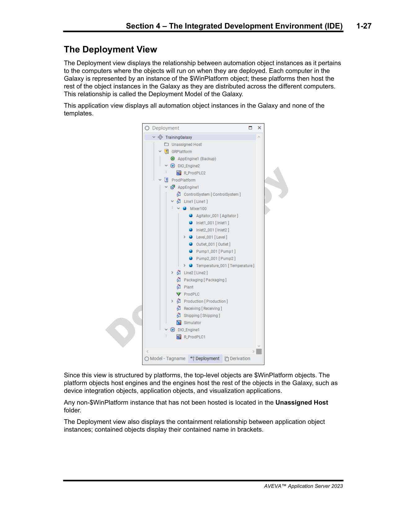
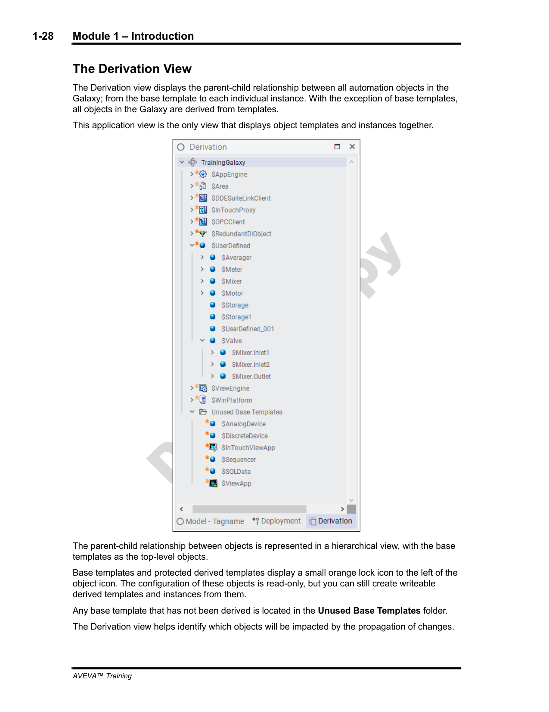
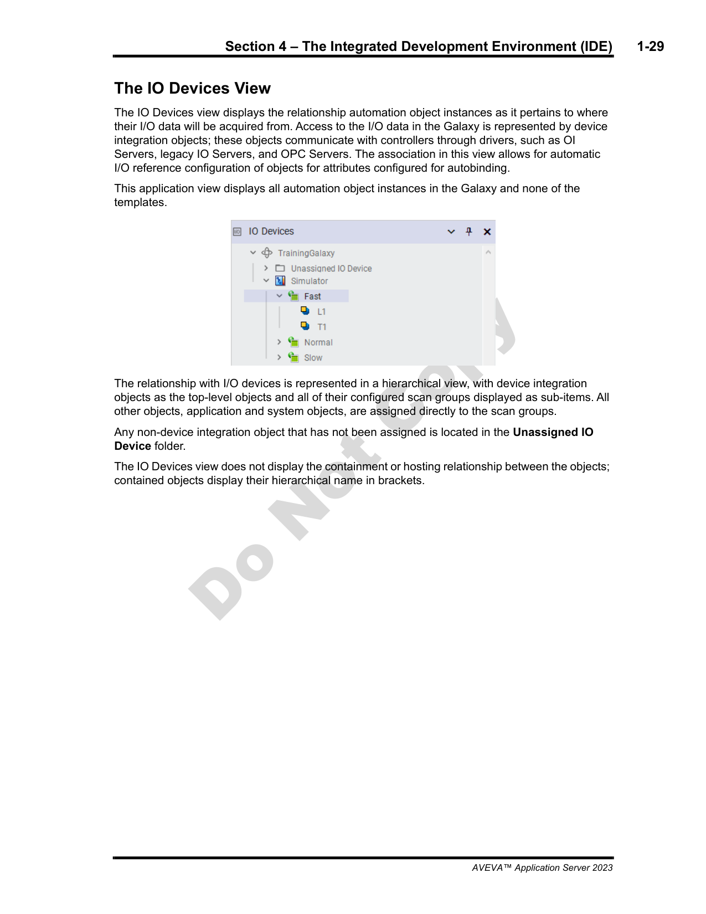
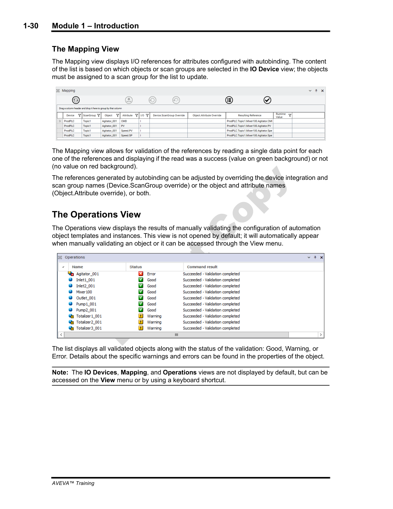

Source: AVEVA Application Server 2023 Training Manual, Module 1, Section 4 (pages 1-21 to 1-30)
A complete tour of the Integrated Development Environment — the workspace where you design, configure, and deploy your Galaxy.
Reference: Module 1, Section 4 (page 1-21)
Now that you have created a Galaxy (Lesson 1), it is time to explore the tool you will spend most of your time in: the Integrated Development Environment (IDE).
Understanding the IDE's role is critical. The relationship works like this:
| Component | Role | What It Does |
|---|---|---|
| IDE (your workstation) | Client | Presents the user interface, lets you design objects, configure settings, and issue commands |
| Galaxy Repository (GR) | Server | Stores the Galaxy database, executes all commands, manages deployment to platforms |
This means:

Reference: Module 1, Section 4 (page 1-22)
The IDE provides three categories of functionality: Galaxy-wide settings, object management, and import/export.
These settings apply to the entire Galaxy and affect all objects within it. You configure them once and they apply everywhere:
| Setting | Purpose | Key Detail |
|---|---|---|
| Security | Controls who can access and modify the Galaxy | Define users, roles, and permissions; integrates with Windows Active Directory |
| Language | Sets the display language for the IDE | Affects menus, dialogs, and object display names |
| I/O Configuration | Global I/O communication settings | Default timeouts, communication parameters, scan intervals |
| Graphics | Default graphics settings for the Galaxy | Screen profiles, default graphic sizes, display preferences |
| Time Master | Defines the master clock source | All platform clocks synchronize to this reference |
| Alarms | Global alarm configuration | Alarm classes, priorities, logging, and suppression settings |
| Preferences | IDE user preferences | Layout, window positions, display options per user |
| Multi-Galaxy | Cross-Galaxy communication | Configure how multiple Galaxies share data at runtime |
The IDE lets you create, modify, delete, and organize automation objects. You can:
You can move objects between Galaxies or back up your work:
Reference: Module 1, Section 4 (page 1-23)
The IDE organizes its workspace into two tools (tabs) and multiple application views. This structure keeps different aspects of your Galaxy organized.
Below the tools, the IDE provides several application views, each showing a different perspective on your Galaxy:
| View | Purpose |
|---|---|
| Model View | Shows the plant model hierarchy — areas, equipment, and object containment |
| Deployment View | Shows platforms, engines, and which objects are deployed where |
| Derivation View | Shows parent-child relationships between templates and instances |
| IO Devices View | Shows device integration objects, scan groups, and I/O bindings |
| Mapping View | Shows I/O reference validation and autobinding information |
| Operations View | Shows deployment operations and their status |

Reference: Module 1, Section 4 (page 1-24)
The Templates tab is where you browse, create, and manage template objects — the reusable building blocks that define your automation application.
The Templates tab organizes templates into a hierarchy of toolsets (folders). The default toolsets include:
| Toolset | Contents | Typical Use |
|---|---|---|
| Application | Application-level templates (e.g., ViewApp, AppEngine) | Organizing application structure, hosting graphics |
| Device Integration | I/O device templates, communication drivers | Connecting to PLCs, RTUs, and other field devices |
| System | System-level templates (platforms, engines) | Defining computers and runtime infrastructure |
Protected templates are marked with an orange lock icon. They are read-only. You cannot modify, delete, or rename protected templates. This ensures the integrity of the template hierarchy.
Each template shows what it contains — which other object types can be nested inside it. This containment hierarchy is how you organize your Galaxy. For example:
$Area object can contain other $Area objects (sub-areas) and equipment objects$Equipment object can contain I/O and logic objects$Platform object can host engines and objectsYou can create your own toolsets to organize custom templates. This is useful for grouping equipment types, separating phases of a project, or organizing by function (e.g., "Pumps", "Valves", "Heat Exchangers").

Reference: Module 1, Section 4 (page 1-25)
The Graphics tab is where you browse and use graphic symbols — the visual elements you drag onto your HMI screens.
Like templates, graphics are organized into toolsets (folders). The two main graphic libraries are:
| Library | Style | Best For |
|---|---|---|
| Industrial Graphics | Traditional, detailed symbols | Classic HMI applications with detailed equipment graphics |
| Situational Awareness (SA) | Modern, flat design with dynamic coloring | Alarm-focused displays, high-performance HMI |
Like template objects, some graphic symbols are protected (read-only). These are the system-provided symbols that ship with Application Server. You can derive from them to create custom versions, but you should never modify the originals.
To use a graphic symbol:

Reference: Module 1, Section 4 (page 1-26)
The Model View shows your Plant Model — the logical hierarchy of areas, equipment, and objects that represents your physical plant.
$Area objects. Areas represent physical locations or functional groups in your plant. You can nest areas up to 10 levels deep.
Typical area hierarchy:
The Model View offers two ways to identify objects:
| Mode | Shows | Example |
|---|---|---|
| Tagname | The full hierarchical path from the root | $Area1\Distillation\Column1\FeedPump |
| Alias | A user-friendly, human-readable name | Feed Pump 101 |
Toggle between the two views using the Tagname/Alias button in the toolbar. Alias view is often easier for operators to read; Tagname view is more precise for engineering.
The Model View shows which objects are contained within each area. This containment hierarchy is the same one enforced by the templates — an object can only be placed where its parent template allows it.

Reference: Module 1, Section 4 (page 1-27)
The Deployment View shows your Deployment Model — which computers, engines, and objects are part of the running application.
$WinPlatform object, which represents a physical computer that hosts engines and objects.
Key elements of the Deployment View:
| Element | Purpose |
|---|---|
| $WinPlatform | Represents a physical computer; must be deployed before anything else can run on it |
| Engines | Runtime engines that execute object logic (e.g., AppEngine, Alarm Engine) |
| Object Deployment | Shows which objects are deployed to which platform/engine |
| Unassigned Host | Temporary holding area for objects not yet assigned to a platform |
The deployment process follows this order:

Reference: Module 1, Section 4 (page 1-28)
The Derivation View shows the parent-child relationships between templates and instances — the inheritance hierarchy of your objects.
Example hierarchy:
$Pump (base template) → defines default attributes like speed, status, alarm limits$Pump_Drive (derived template) → adds drive-specific attributesPump_001 (instance) → inherits from $Pump_Drive, has specific valuesWhen you modify a base template, the change cascades to all derived objects. This is powerful but requires caution:
| Change Type | Impact |
|---|---|
| Adding a new attribute | New attribute appears in all derived objects (no existing values affected) |
| Modifying an existing attribute default | Only affects instances that have NOT overridden that attribute |
| Removing an attribute | Attribute is removed from all derived objects — potential data loss! |
| Modifying a script | All derived objects inherit the new script (unless overridden) |
The Derivation View includes an Unused Base Templates folder. This shows template objects that have been defined but have no instances derived from them. Review this folder periodically to clean up unused templates.

Reference: Module 1, Section 4 (page 1-29)
The IO Devices View shows your device integration objects — the objects that connect your Galaxy to field devices (PLCs, RTUs, sensors).
Each communication path to a field device is represented by a device integration object. These objects define:
Autobinding is a feature that automatically links I/O object attributes to device integration objects. When you name an I/O attribute to match a tag in the field device, the system can automatically create the binding — saving you from manually configuring every connection.
Device integration objects that have not yet been assigned to a scan group appear in the Unassigned IO Device folder. All device objects must be placed in a scan group before deployment.

Reference: Module 1, Section 4 (page 1-30)
The Mapping View and Operations View provide validation and monitoring for your Galaxy configuration.
The Mapping View helps you verify that all I/O references in your objects are correctly bound. It shows:
When autobinding assigns an I/O reference, you can override it to point to a different device tag. The Mapping View shows which bindings are auto-mapped and which have been manually overridden.
The Operations View shows the status of deployment operations:

Reference: Module 1, Section 4 (general IDE navigation)
Efficient navigation in the IDE saves significant time. Here are the essential shortcuts and tips:
| Key | Action | When to Use |
|---|---|---|
* (asterisk / multiply) |
Expand all nodes in the current tree | When you need to see the complete hierarchy at a glance |
+ (plus) |
Expand one level of the current node | When you want to drill down gradually through the hierarchy |
- (minus) |
Collapse the current node | When you want to hide details and clean up the view |
Not all views are visible by default. To show or hide views:
Available views include: Model, Deployment, Derivation, IO Devices, Mapping, and Operations.
The Sync option synchronizes the selected view with the current object selection. When enabled, selecting an object in one view will automatically navigate to that same object in the other views. This is invaluable for understanding how an object appears across different perspectives.
If your IDE windows get rearranged or lost, you can reset the layout:
Q1: What is the relationship between the IDE and the Galaxy Repository?
The IDE is a client that sends commands to the Galaxy Repository (the server). All operations — deploy, import, export — are executed by the GR, not by the IDE. The IDE is a remote control.
Q2: Which view should you use to see the plant area hierarchy (areas, equipment, objects)?
The Model View. It shows the Plant Model hierarchy with $Area objects at the top level, and supports both Tagname (full path) and Alias (human-readable) display modes.
Q3: What happens to child objects when you modify a base template in the Derivation View?
Changes propagate to all derived instances. If a child has overridden a specific attribute, the parent change does not affect that attribute on the child. Otherwise, the change cascades down.
Q4: In which view do you verify that I/O bindings are correctly configured before deployment?
The Mapping View. It shows all I/O references, their autobinding status, and any binding conflicts. Check this view before deploying to catch errors early.
Q5: What are the keyboard shortcuts to expand all nodes (*) and collapse nodes (-) in a tree view?
Press * (asterisk) to expand all nodes, + (plus) to expand one level, and - (minus) to collapse nodes. These work in any tree view in the IDE.
Click each answer to reveal it.
Source: AVEVA Application Server 2023 Training Manual, Module 1, Section 4 (pages 1-21 to 1-30)